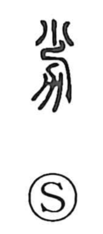

劣

Uncategorized
Kun: otoru | On: retsu
to be inferior ・ weak ・ few
Explanation
Shirakawa reads 劣 as a compound of 少 (few) and 力, which in ancient script depicts a plow. The graph pictures meager muscular strength at the plow—insufficient power for tilling—hence the idea of weakness and inferiority, a sense already noted as "weak" in the Shuowen. From this concrete scene the meaning broadened to "to be inferior," "weak," and by extension "few."